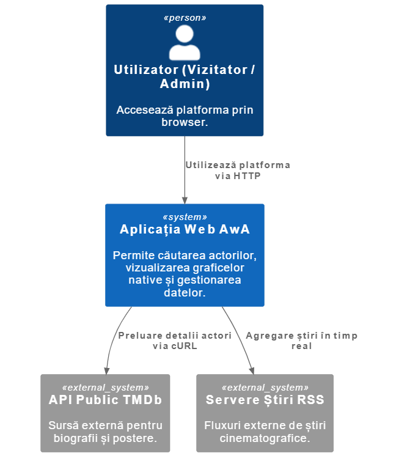
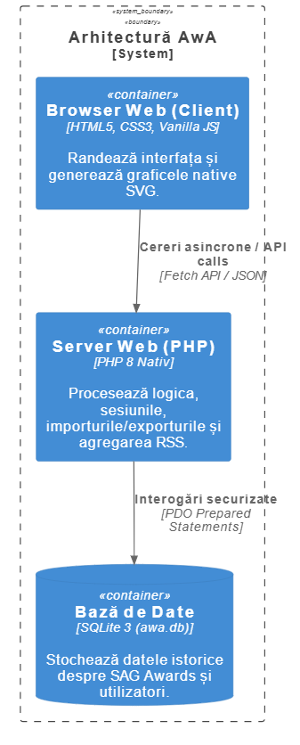
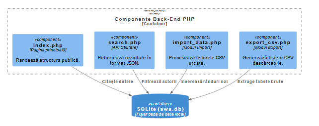

Design Arhitectural și Tehnologic AwA
1. Introducere
Acest raport detaliază deciziile arhitecturale, modelarea datelor și fluxurile tehnologice ale sistemului AwA. Arhitectura a fost proiectată pentru a fi modulară, scalabilă și complet independentă de framework-uri, punând în valoare capabilitățile native ale limbajelor PHP și JavaScript moderne.
2. Modelarea Datelor și Persistența
Nucleul sistemului este reprezentat de o bază de date SQLite 3, aleasă pentru portabilitatea sa și performanța ridicată în operațiuni de citire. Schema bazei de date este normalizată pentru a minimiza redundanța:
- Tabela
nominations: Stochează datele brute despre premii (an, categorie, nominalizat, producție, statut câștigător). - Tabela
actors: Funcționează ca un cache local pentru metadatele preluate de la TMDb (biografie, URL imagine, ID TMDb), reducând numărul de apeluri API externe. - Tabela
news_sources: Gestionează sursele RSS configurabile de către administrator. - Tabela
users: Stochează credențialele administratorilor sub formă de hash-uri securizate.
Importul datelor se realizează prin scriptul import_data.php, care utilizează tranzacții SQL pentru a asigura atomicitatea operațiunilor de scriere masivă din fișiere CSV.
3. Arhitectura Sistemului (Modelul C4)
Pentru o înțelegere ierarhică a sistemului, am utilizat modelul C4, structurat pe trei niveluri de detaliere:
Nivelul 1: Diagrama de Context
Sistemul AwA interacționează cu două tipuri de actori umani (Vizitator și Admin) și trei sisteme externe: TMDb API pentru biografii, Google News pentru știri specifice și diverse servere RSS pentru fluxuri generale.

Nivelul 2: Diagrama de Containere
Aplicația este divizată în trei containere principale:
- Web Browser Application: Aplicație Single Page (simulată) construită cu Vanilla JS, responsabilă de interfața utilizator și randarea SVG.
- PHP API Application: Un set de endpoint-uri RESTful care gestionează logica de business și comunicarea cu DB.
- Database (SQLite): Stocarea fișierelor pe disc, asigurând persistența.

Nivelul 3: Diagrama de Componente
În interiorul containerului PHP, componentele sunt izolate logic:
Auth Manager, Statistics Engine (care calculează agregatele SQL), News Aggregator și TMDb Connector (care folosește cURL pentru cereri externe).

4. Strategii de Securitate și Imunizare
Securitatea a fost implementată la nivel de design ("Security by Design"), adresând principalele vulnerabilități web:
- SQL Injection: Toate interogările folosesc
PDO::prepare()șibindValue(). Nicio variabilă de intrare nu este concatenată direct în șirul SQL. - Cross-Site Scripting (XSS):
- La nivel de JS: Utilizăm
.textContentîn loc de.innerHTMLpentru orice text provenit din surse externe. - La nivel de PHP: Implementăm o funcție de utilitate
escapeHTMLcare ruleazăhtmlspecialchars()pe orice ieșire.
- La nivel de JS: Utilizăm
- Securitatea Sesiunilor: Utilizăm
session_start()cu setări restrictive și hash-uriBCRYPTpentru parole, folosind un cost de procesare ridicat pentru a preveni atacurile de tip brute-force.
5. Motorul de Vizualizare SVG
Spre deosebire de soluțiile bazate pe Canvas (care sunt rasterizate), motorul nostru generează elemente SVG (Scalable Vector Graphics). Procesul urmează acești pași:
- Preluarea datelor agregate în format JSON de la
get_stats.php. - Calcularea dimensiunilor (lățime, înălțime, raze) în funcție de containerul părinte.
- Generarea șirului de caractere XML pentru elemente precum
<rect>,<circle>și<path>. - Injectarea codului rezultat în DOM, permițând stilizarea ulterioară prin CSS.
Exportul în WebP este realizat prin tehnica de "blitting": desenăm elementul SVG pe un context Canvas 2D și utilizăm toDataURL('image/webp') pentru a genera imaginea finală.
6. Bibliografie și Resurse
- [1] Brown, S. (2022). The C4 model for visualizing software architecture. Disponibil la: https://c4model.com/. Resursă fundamentală pentru proiectarea diagramelor de nivel 1-3.
- [2] World Wide Web Consortium (W3C). Scholarly HTML Community Group Report. Disponibil la: https://w3c.github.io/scholarly-html/. Standard pentru formatarea rapoartelor.
- [3] PHP Manual. PDO - PHP Data Objects. Disponibil la: php.net/manual/en/book.pdo.php. Documentație pentru securitatea interogărilor SQL.
- [4] MDN Web Docs. SVG: Scalable Vector Graphics. Mozilla Foundation. Ghid tehnic pentru generarea elementelor grafice native.